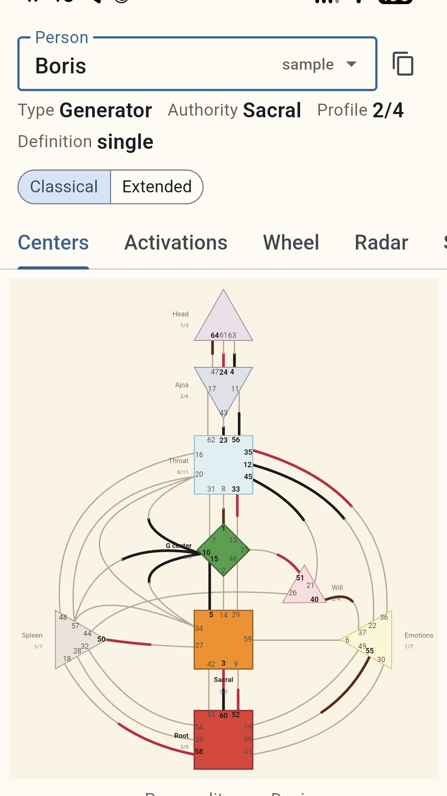
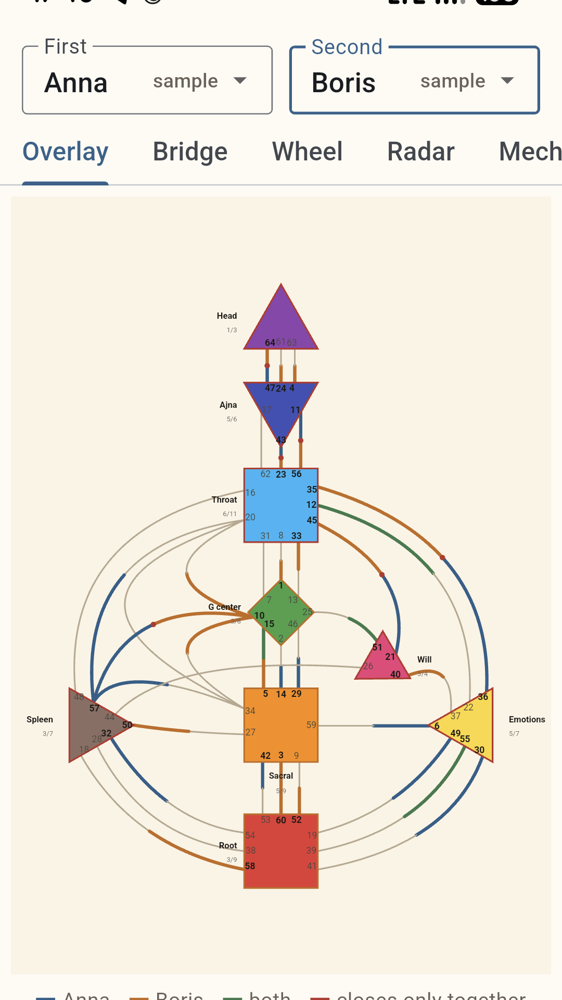

Почему Human Design интересен везде, где есть люди
В отпуске мне попалась модель Human Design. Как инженера меня сначала заняла структура: исходные данные, алгоритм, карта на выходе. Потом я заметил другое.
Многие описания типов совпадают с тем, что видно в жизни: люди по-разному принимают решения, реагируют на давление, проявляют инициативу и восстанавливаются. Human Design предлагает собственную модель этих различий.
Генератору — ориентироваться на отклик. Проектору — распределять энергию и получать признание роли. Манифестору важна свобода инициативы. Рефлектор особенно чувствителен к окружению.
Насколько точно это про конкретного человека, лучше проверять наблюдением, а не спором.
Карта создаёт гипотезу. Поведение её подтверждает, уточняет или отбрасывает.
Поэтому Human Design интересен не только как взгляд на одного человека. Тот же ход мысли применим везде, где люди имеют дело друг с другом.
Human Design и HR
В HR интереснее сравнение нескольких карт. Вопрос уже не «какими особенностями обладает человек», а что происходит между людьми.
Почему два хороших специалиста постоянно конфликтуют? Почему один руководитель раскрывает сотрудника, а другой теми же методами получает обратный результат? Почему человек отлично работает один и теряет эффективность в конкретной команде?
Сравнение карт даёт дополнительные гипотезы про инициативу, решения, коммуникацию, точки напряжения и взаимное дополнение. Это не основание для кадрового решения.
Модель предполагает — HR наблюдает и проверяет.
Совпало с интервью, совместной работой и результатами — можно пользоваться. Не совпало — отбросить.
Не только работа
В семье родители передают детям свой способ решать и взаимодействовать. Ребёнку может подходить другой. В паре и в дружбе то же: один решает быстро, другому нужно время; одному автономность, другому постоянный контакт.
Мы почти всегда оцениваем другого через собственную модель поведения. Human Design предлагает на время от неё отказаться и спросить:
А что, если этот человек просто устроен иначе?
Иногда уже сам этот вопрос меняет взгляд на конфликт.
Где здесь инженерия
Я не занимаюсь профессиональной интерпретацией карт. Моя часть — техническая. Дата, время и место рождения → положения тел → карта по правилам Human Design. При одинаковых входах результат должен совпадать.
Поэтому я сделал приложение, которое берёт этот расчёт на себя. Считает офлайн, на устройстве. Данные рождения на сторонний сервер не уходят.
Одна карта — человек. Две — взаимодействие. Группа — команда, семья или другая система.


Приложение считает данные. Human Design предлагает модель. Модель формирует гипотезу. Жизнь показывает, насколько она полезна.
Не потому, что карта должна дать окончательный ответ, а потому что появляется ещё один способ увидеть различия и задать вопросы, которых без неё могло не возникнуть.